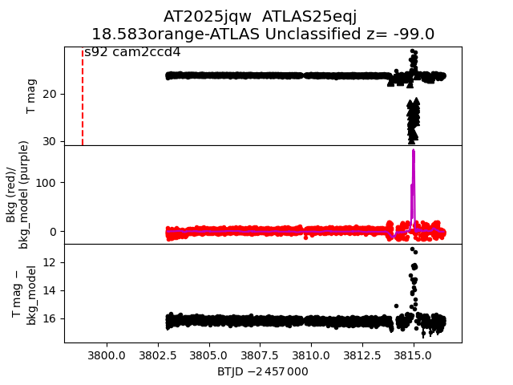
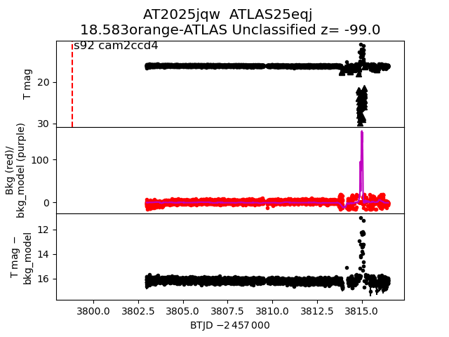

all transients in sector92 (53 total)
Each figure has three panels. The top panel shows the transient light curve, the middle panel shows the local background (estimated in an annulus), and the bottom panel shows a "background-model corrected" light curve. Details about the background model are in the README.
The vertical red line marks the time of discovery reported to TNS. Other useful metadata from TNS is in the figure title.
Note that the top and bottom panel are in magnitudes, while the middle panel is in differential flux units. The magnitudes are calibrated to the flux in the reference image used for image subtraction. Thus, flux from the host galaxy is included in these magnitudes.
3-sigma upper limits are plotted as triangles with no errorbars. A typical limiting magnitude is 19.6 in 30 minutes or 18.4 in 200 seconds (for low backgrounds).
The links allow you to download the light curve data as a text file.
More details in the README.
2025kqd
2025kjo
2025krp
2025jzl
2025kro
2025jsm
2025kqr
2025ksf
2025kna
2025ktf
2025khr
2025kru
2025jvf
2025kdw
2025jov
2025jxm
2025knk
2025kse
2025krl
2025jsn
2025krs
2025ksi
2025kqg
2025krz
2025kdu
2025krb
2025kfd
2025keo
2025ksg
2025krt
2025kqs
2025jsl
2025kdy
 2025krn
2025krn
 2025krq
2025ksb
2025krq
2025ksb
 2025kqz
2025kqe
2025ksk
2025jqw

2025ksh
2025kqf
2025kqz
2025kqe
2025ksk
2025jqw

2025ksh
2025kqf
 2025ksa
2025knf
2025krr
2025jso
2025krm
2025kdz
2025kqc
2025khy
2025ktm
2025kra
2025kdv
2025ksa
2025knf
2025krr
2025jso
2025krm
2025kdz
2025kqc
2025khy
2025ktm
2025kra
2025kdv